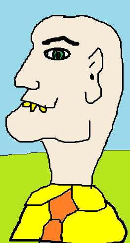

I mo Bhríste Gairid domh
Teach an Mhargaidh
|
Pól Nuair a bhí mé i mo ghasúr scoile, ba bheag lá nach dtugainn cuairt ar Theach an Mhargaidh. Bhí sé mar a bheadh sé do mo mhealladh chuige. Bhí sé dalba. Bhí an teach s'againne ar an taobh eile den droichead, rud a d'fhág nach dtiocfadh liom pilleadh ar an bhaile gan dul thar chara uasal na mbrící dearga s'agam. Ach déarfainn dá mbeinn i mo chónaí in íochtar an bhaile féin go rachainn as mo chosán le bheith i ngaobhair Theach an Mhargaidh. Bhí dhá fhuinneog mhóra ar aghaidh Theach an Mhargaidh, an chuid a d'amharcadh ar an Leacht. Is ar an dá leac, faoi bhun na bhfuinneog sin, a bhíodh saoithe an bhaile ina suí, bíodh samhradh nó geimhreadh ann. Thiar ar a gcúl ar an taobh eile den ghloine, bhí leabharlann an bhaile. Phléadh siad an léann ar fad a bhí istigh thiar ansin - agus léann nach é! Ag dul tharstu domh, saoithe na bhfuinneog, chuireadh duine acu an cheist i gcónaí orm, an bhfuair mé mórán buillí sa scoil. Deirinn nach bhfuair, ar ndóighe, mar nach gasúr dalba mé. Bhaineadh an freagra seo na gáirí astu, ar chúis éigin. |